Abra o Tinkercad e crie um Projeto 3D

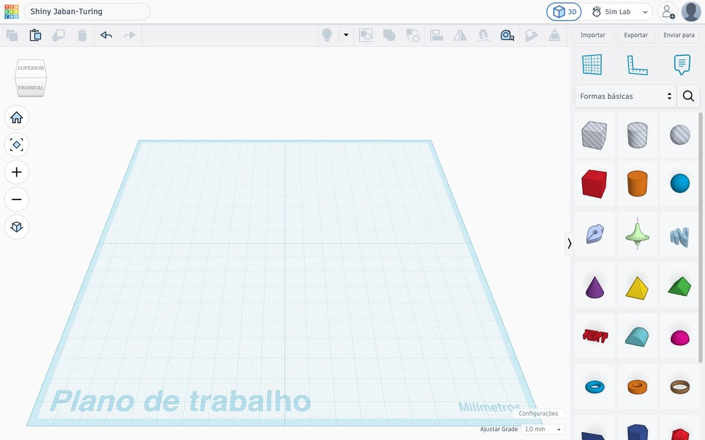
O clipe repete sozinho. Repare onde o cursor vai antes de clicar.
Foto da tela.
Entre no Tinkercad com a sua conta. No canto de cima à direita, clique em + Criar e, na primeira linha, em Projeto 3D.
Abre o editor com o plano azul quadriculado vazio e um nome sorteado — deixe assim, no último passo você troca.
- Não sei entrar
- Chame o professor. Não crie conta nova: os seus projetos estão na antiga.
- Abriu outra coisa
- Volte com a seta ⟵ do navegador e clique de novo em + Criar, escolhendo a primeira linha.
- A tela ficou branca
- O Tinkercad é pesado. Espere até meio minuto. Se continuar branca, recarregue com F5.
Arraste uma Caixa para o plano
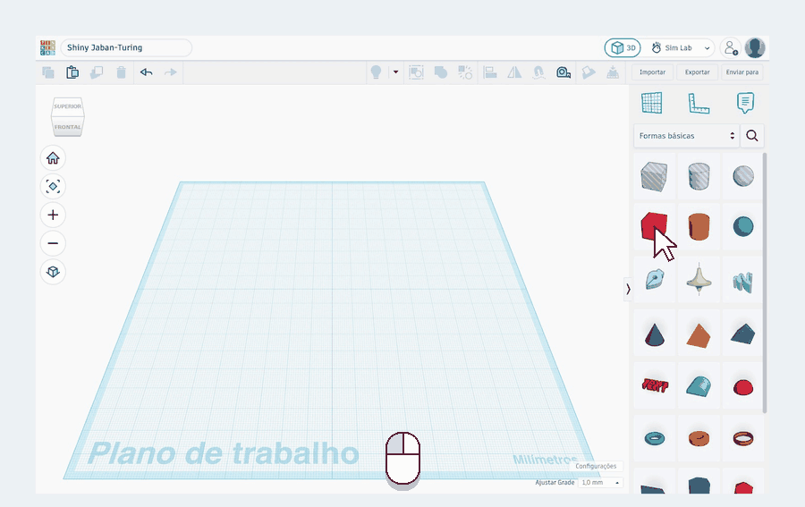
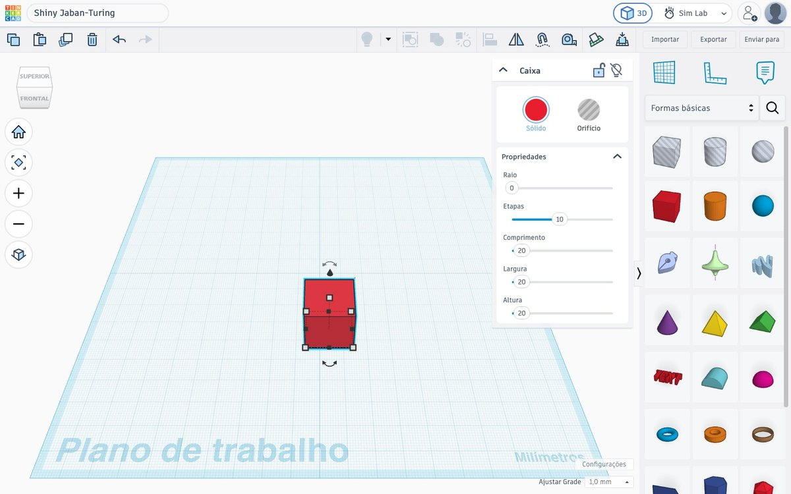
O clipe repete sozinho. Repare onde o cursor vai antes de clicar.
Foto da tela.
Na coluna da direita, a forma vermelha do meio da segunda fileira, à esquerda, é a Caixa. Segure o botão esquerdo nela, arraste até o meio do plano e solte.
- Peguei a caixa cinza listrada
- Essa é o buraco. Aperte Delete e arraste a vermelha.
Dado 60 × 60 × 60
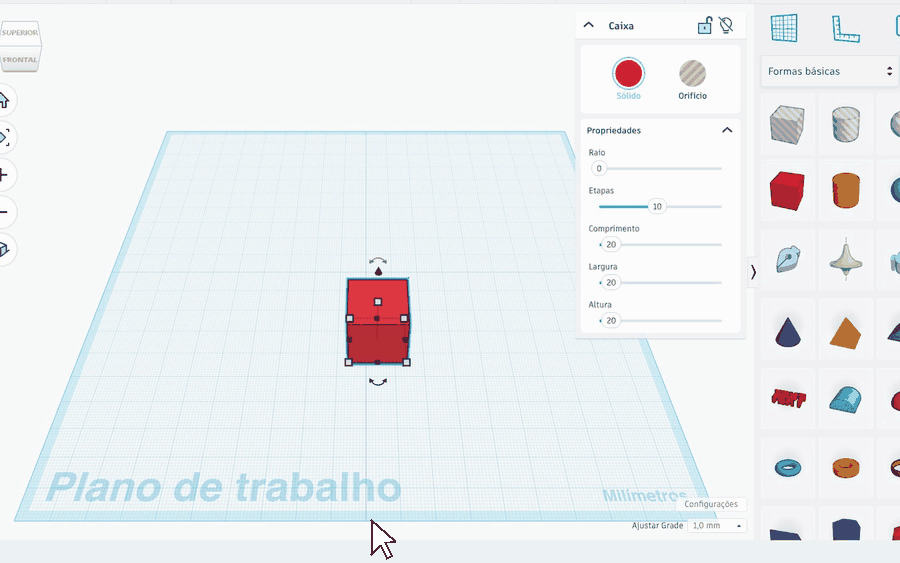
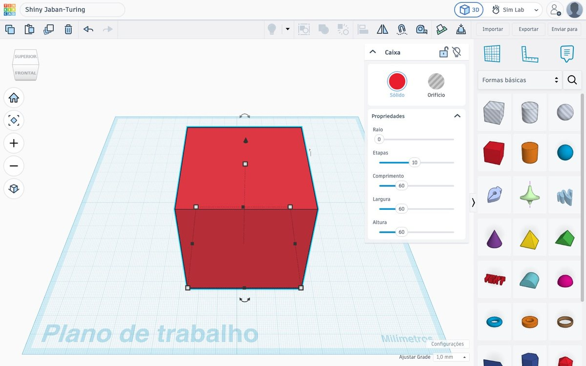
O clipe repete sozinho. Repare onde o cursor vai antes de clicar.
Foto da tela.
No painel, escreva 60 em Comprimento, 60 em Largura e 60 em Altura (Enter depois de cada).
Um cubo perfeito: os três lados iguais.
- Digitei e nada mudou
- Falta o Enter depois de cada número.
- Ficou um tijolo
- Um dos números ficou diferente de 60. Confira os três campos.
Solte uma Esfera no meio da tampa
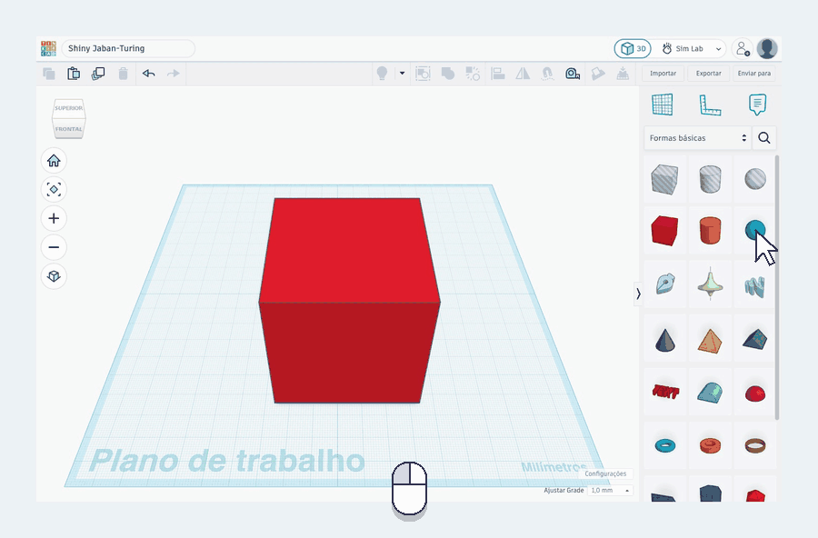
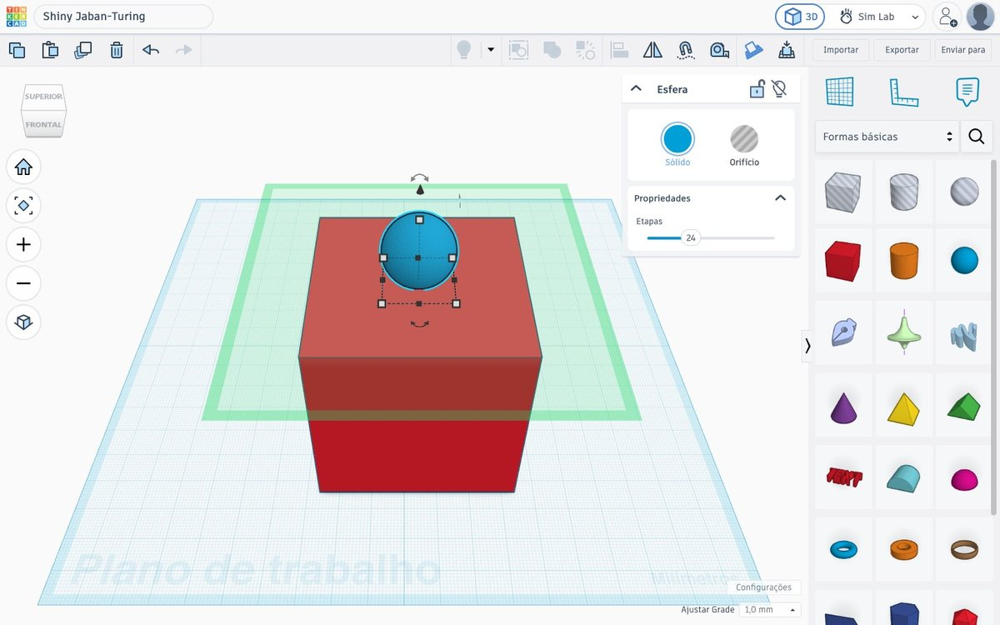
O clipe repete sozinho. Repare onde o cursor vai antes de clicar.
Foto da tela.
Clique num lugar vazio do plano. Na coluna da direita, a bola azul do canto direito da segunda fileira é a Esfera. Segure o botão esquerdo nela e solte no meio da tampa do dado.
A esfera nasce em cima da tampa (aparece o quadrado verde, o plano de trabalho que foi para o alto) e já no meio.
- A esfera caiu no chão
- Você soltou fora do dado. Arraste de novo, soltando em cima da tampa.
- Peguei a esfera cinza listrada
- Essa já é o buraco. Pule o próximo passo, mas continue com o seguinte.
Transforme a esfera em Orifício
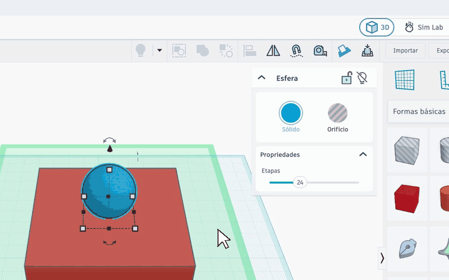
O clipe repete sozinho. Repare onde o cursor vai antes de clicar.
Foto da tela.
Com a esfera selecionada, no painel clique em Orifício (a bolinha cinza listrada, ao lado de Sólido).
A esfera fica cinza e transparente: agora é um buraco.
- Nada mudou de cor
- Confira que a esfera está selecionada (com as alças) e clique na bolinha do Orifício.
- O dado é que ficou listrado
- Você estava com o dado selecionado. Clique em Sólido para desfazer e selecione a esfera.
Afunde a esfera: Ctrl + ↓, dez vezes
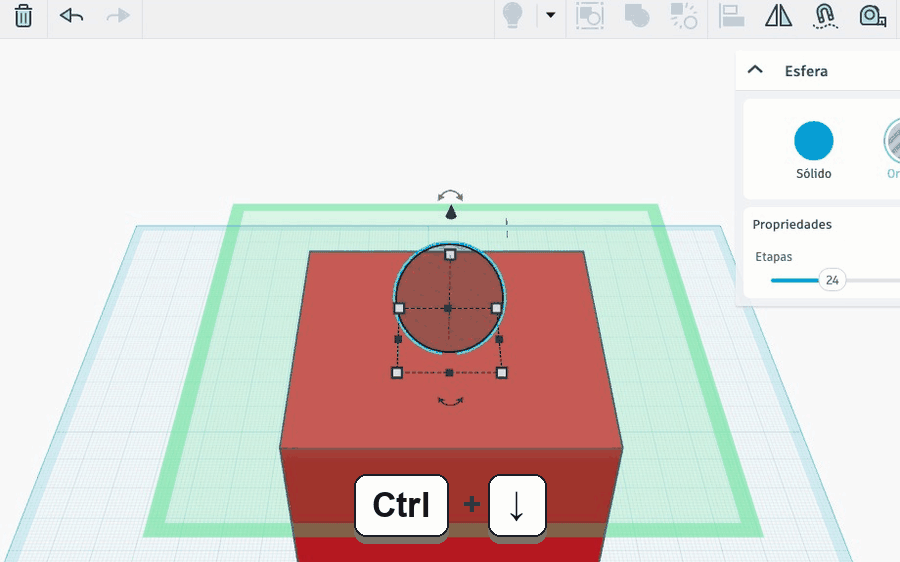
O clipe repete sozinho. Repare onde o cursor vai antes de clicar.
Foto da tela.
A esfera está pousada em cima da tampa, só encostando: se agrupasse assim, não cavaria nada. O centro dela precisa ficar na superfície, de modo que metade entre no dado.
Com a esfera selecionada, segure Ctrl e aperte a seta para baixo ↓ dez vezes. Cada toque desce 1 mm: a esfera tem 20 mm de largura, então 10 mm é a metade.
- A esfera andou de lado
- Você soltou o Ctrl. A seta sozinha anda no plano; com Ctrl é que sobe e desce.
- Desceu demais e sumiu
- Aperte Ctrl e a seta para cima ↑ algumas vezes até aparecer o topo dela.
- Não desce nada
- Clique uma vez na esfera para selecioná-la. Atalho de teclado só vale para a peça marcada.
Leve a esfera para o canto: Shift + ← e Shift + ↓
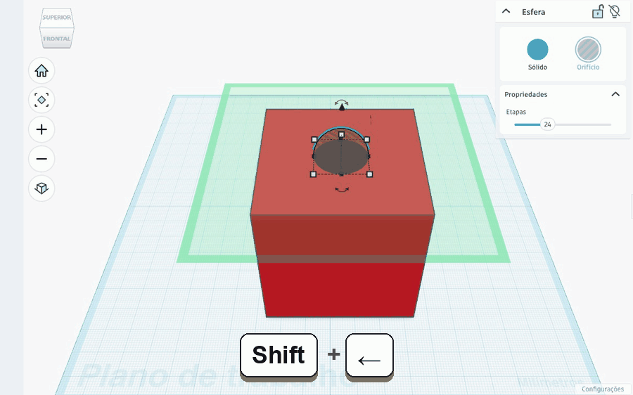
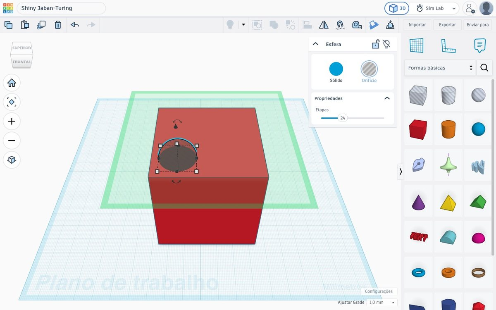
O clipe repete sozinho. Repare onde o cursor vai antes de clicar.
Foto da tela.
Agora vamos fazer uma fileira diagonal de três furos: um no canto, um no meio, um no outro canto. Com a esfera ainda selecionada: segure Shift e aperte ← uma vez (10 mm) e, sem Shift, ← seis vezes (6 mm): são 16 mm para a esquerda. Faça o mesmo com ↓: Shift + ↓ uma vez e ↓ seis vezes: 16 mm para a frente.
A esfera vai para o canto da frente, à esquerda da tampa.
- Foi para o lado errado
- Cada Shift + seta é 10 mm e cada seta sozinha é 1 mm. Volte com a seta contrária.
- A câmera mexeu
- A esfera não estava selecionada. Clique nela e refaça.
Ctrl + D e empurre a cópia para o meio
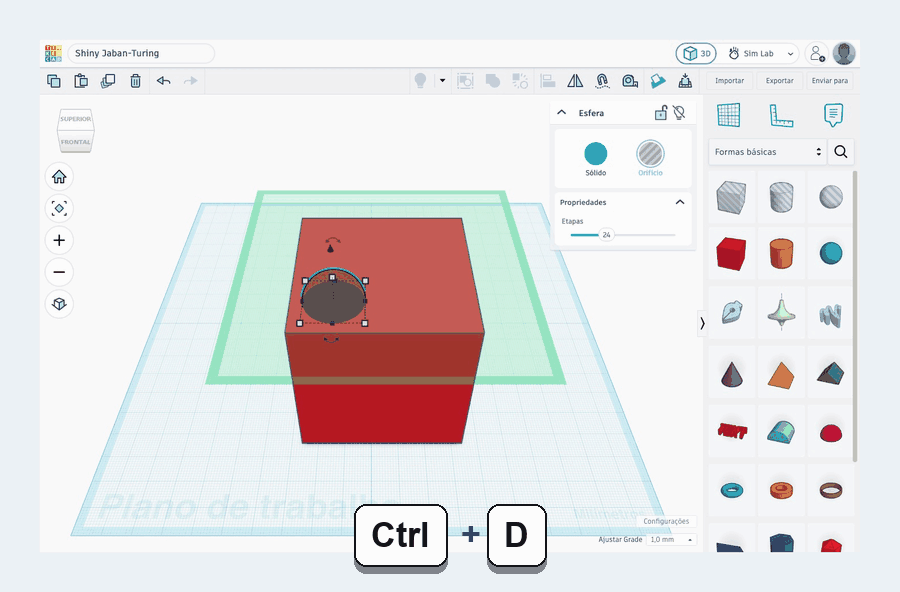
O clipe repete sozinho. Repare onde o cursor vai antes de clicar.
Foto da tela.
Aperte Ctrl + D (Mac: Cmd + D): nasce uma cópia em cima do furo.
Empurre a cópia para o meio da tampa: Shift + → uma vez e → seis vezes (16 mm para a direita); Shift + ↑ uma vez e ↑ seis vezes (16 mm para trás).
- A cópia não nasceu
- O atalho só vale com a esfera selecionada. Clique nela e aperte Ctrl + D de novo.
- Os dois ficaram juntos
- Faltou empurrar a cópia. Use as setas de novo.
Ctrl + D de novo: a cópia se repete sozinha
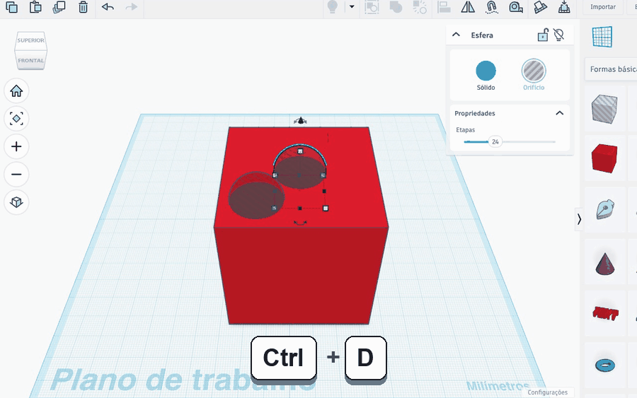
O clipe repete sozinho. Repare onde o cursor vai antes de clicar.
Foto da tela.
Aperte Ctrl + D mais uma vez, sem mexer em seta nenhuma.
Olhe: nasce a terceira esfera já no outro canto. O Tinkercad lembra o último empurrão e o repete na nova cópia. Dois toques de Ctrl + D, e uma fila de três.
- A terceira esfera não foi para o canto
- O Ctrl + D só repete se você acabou de empurrar a cópia anterior. Empurre a nova cópia a mão: 16 mm para a direita e 16 para trás.
- Nasceu uma esfera a mais
- Aperte Ctrl + Z uma vez e confira que são só três.
Solte outra Esfera na face da frente
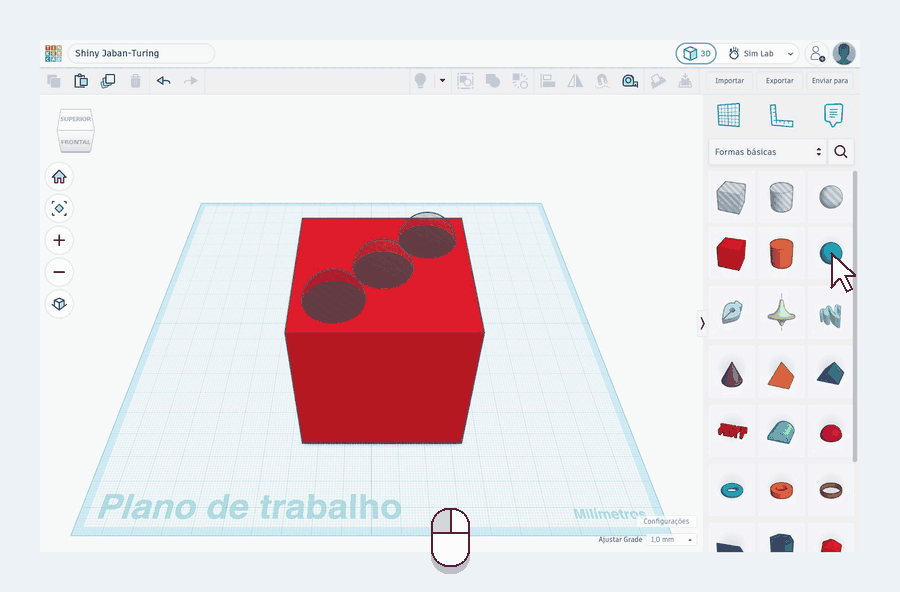
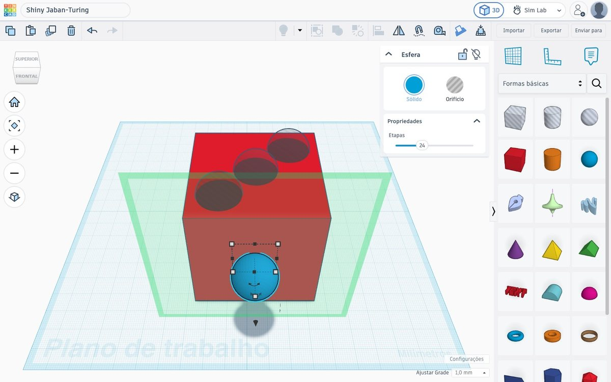
O clipe repete sozinho. Repare onde o cursor vai antes de clicar.
Foto da tela.
Clique num lugar vazio do plano. Arraste outra Esfera da coluna da direita e solte no meio da frente do dado — na parede da frente, e não na tampa.
O quadrado verde fica de pé, colado na parede, e a esfera nasce ali, saindo da parede como o olho do robô da Aula 7.
- A esfera foi para a tampa
- Você soltou na parte de cima. Solte mais para baixo, na frente.
- A esfera caiu no chão
- Você soltou fora do dado. Arraste de novo, soltando em cima da parede da frente.
Transforme em Orifício
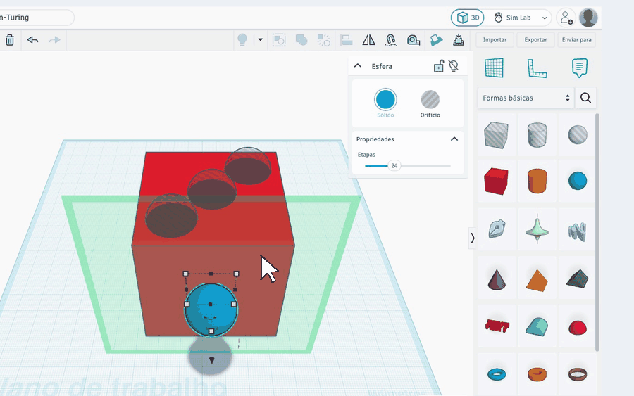
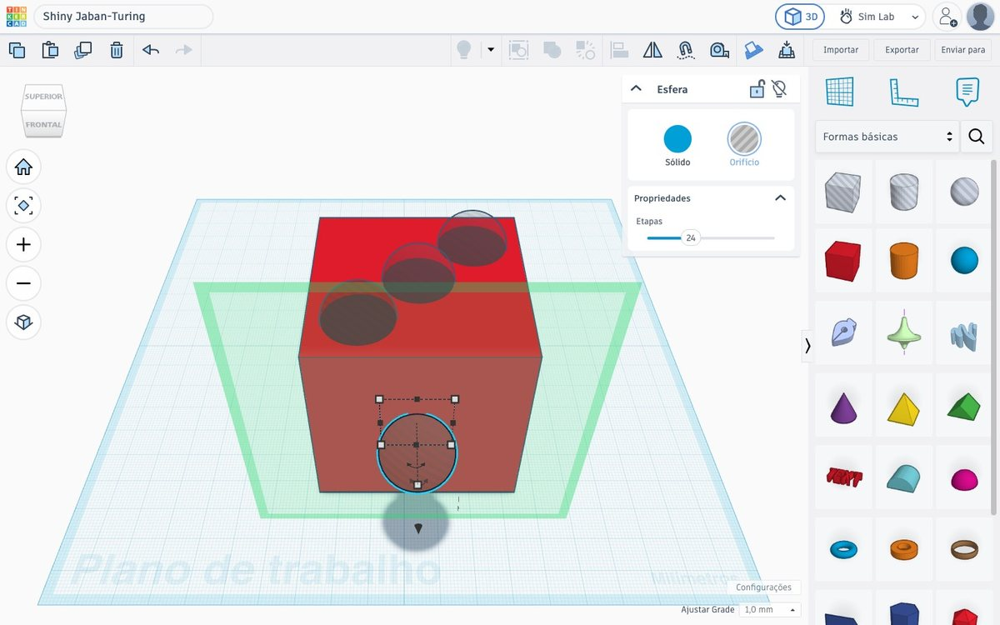
O clipe repete sozinho. Repare onde o cursor vai antes de clicar.
Foto da tela.
Com a esfera selecionada, no painel clique em Orifício. A esfera da frente também vira buraco.
- Virou buraco a esfera errada
- Clique em Sólido para desfazer e selecione a da frente.
Afunde: Ctrl + ↓, dez vezes
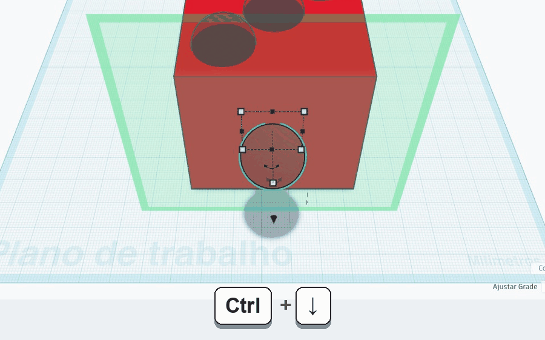
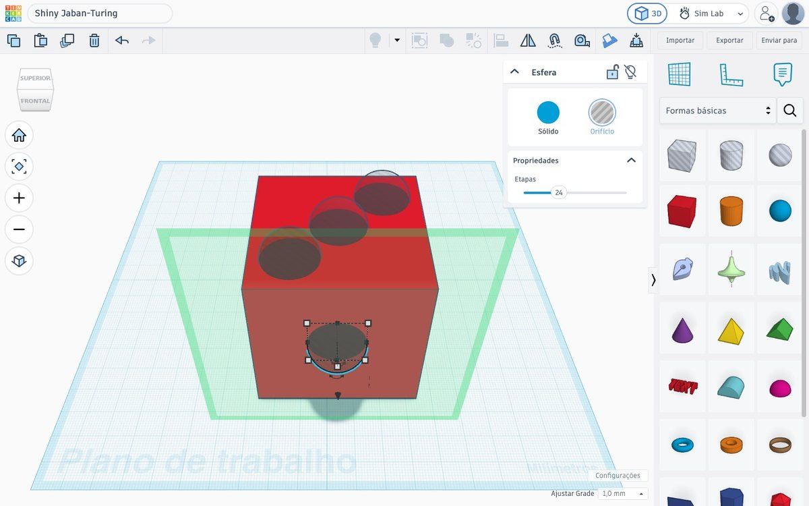
O clipe repete sozinho. Repare onde o cursor vai antes de clicar.
Foto da tela.
Segure Ctrl e aperte ↓ dez vezes. Na face da frente a seta para baixo também afunda: ela empurra a esfera para dentro do dado, na direção da parede. É a mesma regra da tampa: o centro na superfície.
- A esfera subiu em vez de afundar
- Aperte Ctrl e a seta para cima ↑ dez vezes e refaça com ↓.
- A esfera andou na parede
- Faltou o Ctrl.
Selecione tudo: Ctrl + A
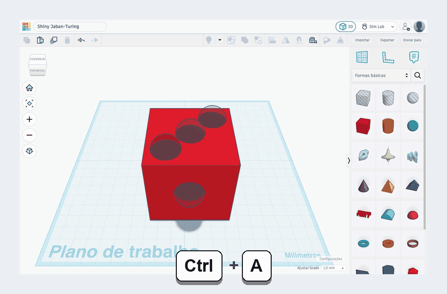
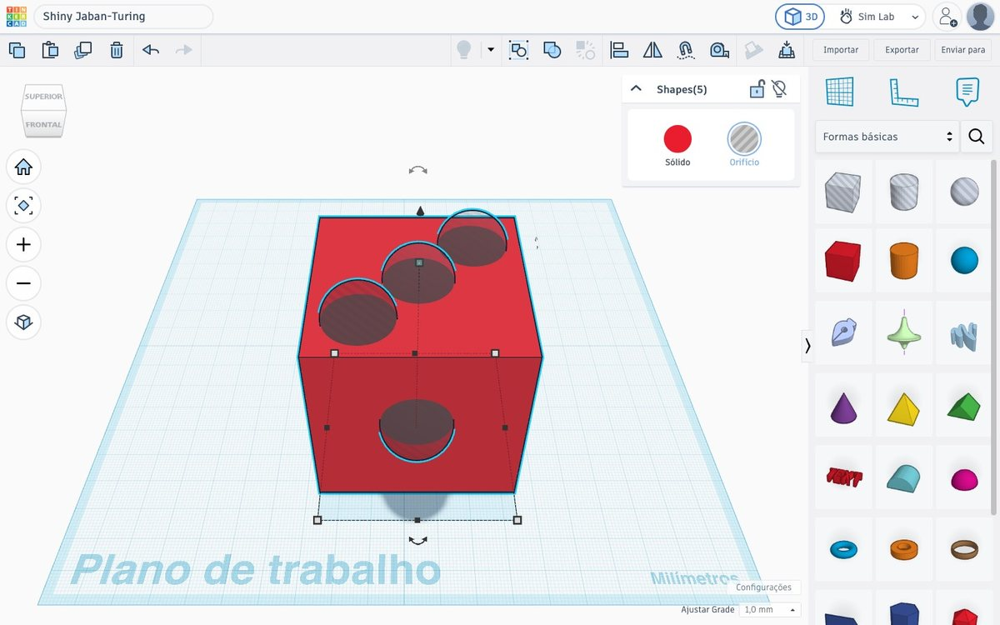
O clipe repete sozinho. Repare onde o cursor vai antes de clicar.
Foto da tela.
Clique num lugar vazio do plano e aperte Ctrl + A (Mac: Cmd + A). O dado e as quatro esferas ficam selecionados: Shapes(5).
- O painel diz outro número
- Conte: o dado e quatro esferas são cinco peças. Se faltar uma, clique num lugar vazio e refaça.
Agrupe: Grupo de união
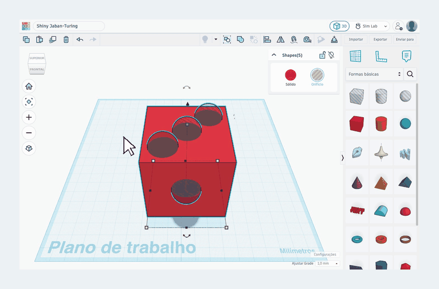
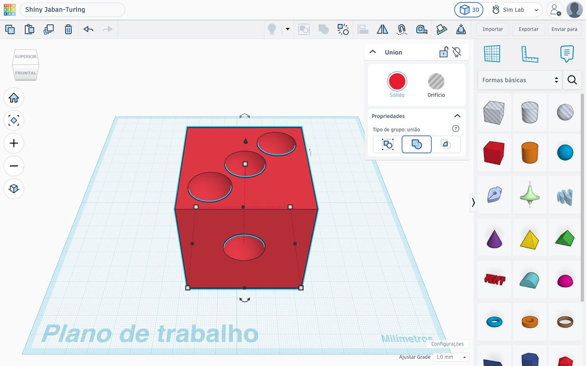
O clipe repete sozinho. Repare onde o cursor vai antes de clicar.
Foto da tela.
Na barra de cima há três botõezinhos de juntar peças, à direita do meio. Clique no do meio, o Grupo de união.
As esferas-buraco cavam o dado e tudo vira uma peça só: o painel diz Union. Os furos aparecem nas paredes.
- Os furos não apareceram
- As esferas não afundaram. Aperte Ctrl + Z, volte aos passos 6 e 12 e afunde dez vezes.
- Sumiu uma esfera
- Ela não estava selecionada. Desagrupe com Ctrl + Shift + G, selecione tudo de novo e agrupe.
Olhe de cima: três furos em diagonal
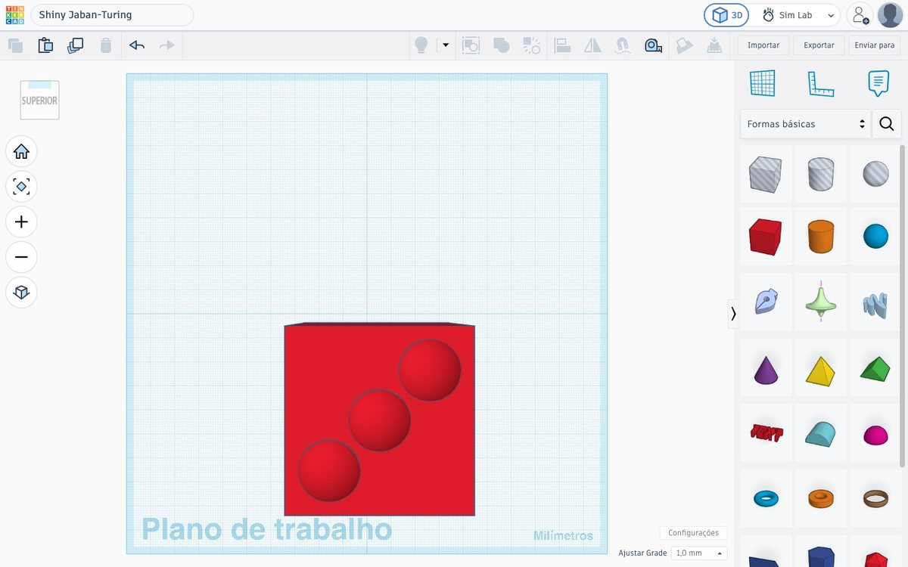
O clipe repete sozinho. Repare onde o cursor vai antes de clicar.
Foto da tela.
Clique num lugar vazio do plano. No cubo de vistas, no canto de cima à esquerda, clique na face escrita SUPERIOR.
De cima se vê a tampa com os três furos em diagonal, igualmente espaçados: o do meio e um em cada ponta.
- A câmera não mudou
- Clique na palavra SUPERIOR do cubinho.
- Só vejo dois furos
- A terceira esfera não saiu no passo 9. Desagrupe, refaça o passo 9 e agrupe de novo.
Volte à vista inicial: o furo do um
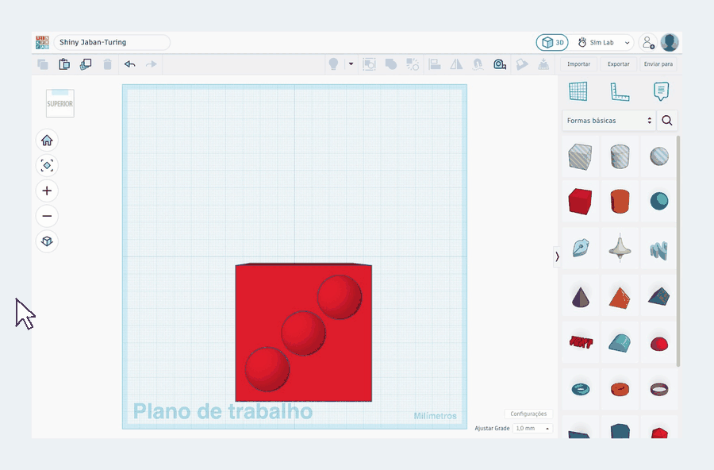
O clipe repete sozinho. Repare onde o cursor vai antes de clicar.
Foto da tela.
Clique na casinha da barra da esquerda. A câmera volta à vista inicial.
Agora se veem as duas faces: três furos em cima e um furo no meio da frente, que é o do um.
- Não vejo o furo da frente
- Ele não afundou (passo 12). Desagrupe, afunde dez vezes e agrupe de novo.
Gire a câmera com o botão direito
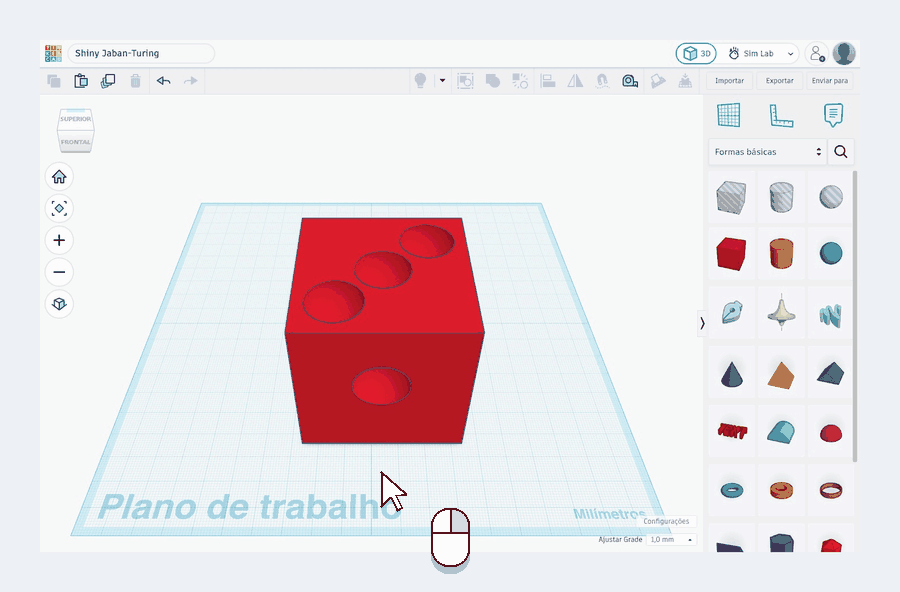
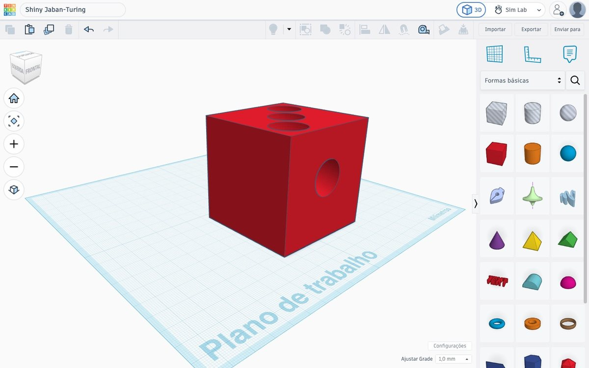
O clipe repete sozinho. Repare onde o cursor vai antes de clicar.
Foto da tela.
Segure o botão direito do mouse em cima do plano de trabalho e arraste um pouco para a direita e para cima.
A câmera gira em volta do dado: dá para ver os furos por outro lado e conferir que são buracos de verdade, com fundo redondo.
- A peça saiu do lugar
- Você usou o botão esquerdo. Aperte Ctrl + Z e repita com o direito.
Aproxime: o botão +
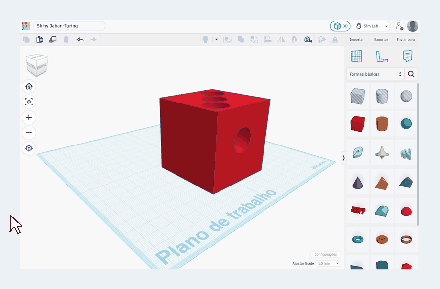
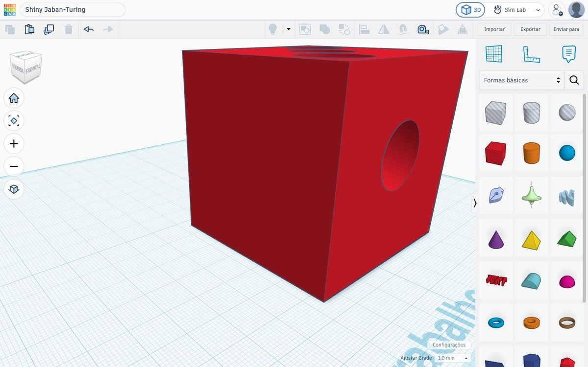
O clipe repete sozinho. Repare onde o cursor vai antes de clicar.
Foto da tela.
Na barra da esquerda, clique no + duas vezes. A câmera chega perto do dado.
O −, logo abaixo, afasta. E a casinha devolve a câmera à vista inicial.
- Não aproximou
- Clique no +, o primeiro botão debaixo do ícone de centralizar.
- Aproximou demais
- Use o − ou a casinha.
Dê um nome ao seu projeto
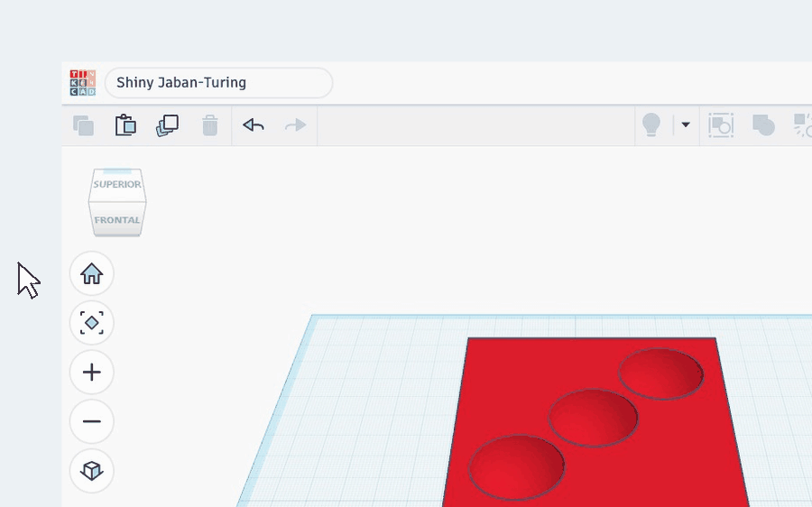
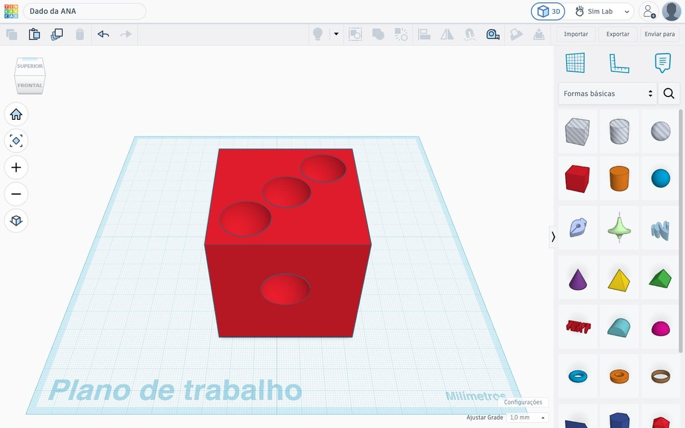
O clipe repete sozinho. Repare onde o cursor vai antes de clicar.
Foto da tela.
Clique na casinha da barra da esquerda para voltar à vista inicial. Depois clique no nome do projeto, no canto de cima à esquerda, apague, escreva Dado da ANA (ou o seu nome) e aperte Enter.
O Tinkercad salva sozinho. O dado está guardado na sua conta.
- O nome não mudou
- Falta o Enter.
- O campo não abriu
- Clique em cima das letras do nome.